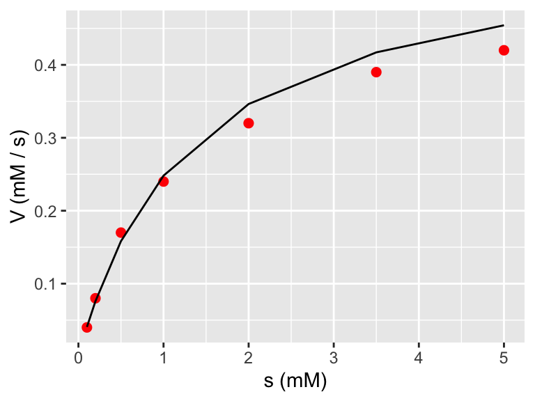
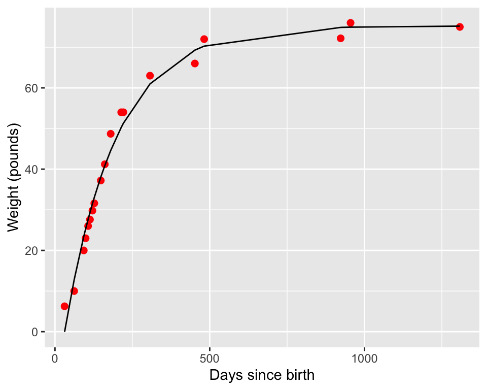
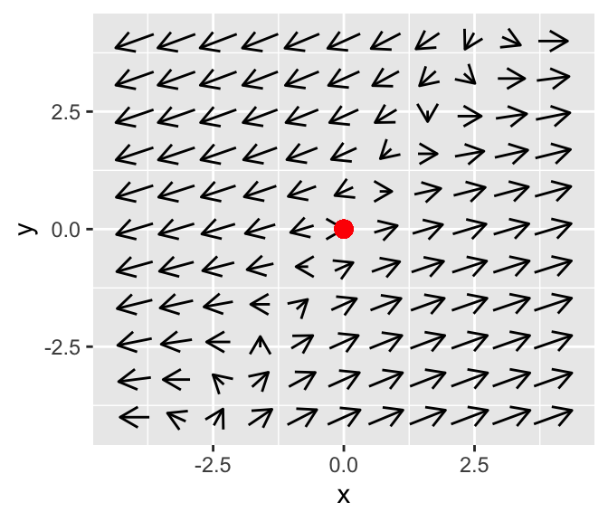

2.3 What do eigenvalues tell us?
Here the focus of the section changes a little bit from finding the solution of the differential equation (e.g. the formulas \(s_{1}(t)\) and \(s_{2}(t)\)) to understanding what the solutions would look like in the phaseplane. This is intentional: once we have found the eigenvalues, finding eigenvectors can seem rather mundane at times (perhaps heavy on the algebra), yet we know they will be a straight line through the origin. We know the general form of the solution is \(\vec{x}(t) = c_{1} e^{\lambda_{1}t} \cdot \vec{v}_{1} + c_{2} e^{\lambda_{2}t} \cdot \vec{v}_{2}\), so what else is there?
In fact, studying the eigenvalues helps us understand the qualitative nature of the solution to a differential equation. Let’s think about the characteristic equation for a 2 by 2 matrix, simplifying things out:
\[\begin{align*} \det(A - \lambda I) &= 0 \\ (a - \lambda)(d-\lambda)-bc &= 0 \\ \lambda^{2} - (a+d) \lambda + ad-bc & = 0 \end{align*}\]
The last line of the above equation is a quadratic equation in \(\lambda\). Think about what you know about quadratic equations: there may be 2 distinct solutions, no solution (the solutions are imaginary) or 1 solution (repeated solutions). Also the solutions may be positive or negative. There are so many different combinations! In this case the solutions are referring to eigenvalues, so there is a phaseplane associated with each case. What types of phaseplanes do all those different types of eigenvalues produce? Let’s take a look at each of these cases, focusing our analysis on a two-dimensional system of equations (the results can be generalized to higher-dimensional systems).
2.3.1 All eigenvalues positive (unstable node)
Let’s consider the phase plane for the differential equation \(\displaystyle \begin{pmatrix} x' \\ y' \end{pmatrix} =\begin{pmatrix} 2 & 0 \\ 1 & 1 \end{pmatrix} \begin{pmatrix} x \\ y \end{pmatrix}\)
The eigenvalues are both positive:
eigenvalues(c(2,0,1,1)) ## eigen() decomposition
## $values
## [1] 2 1
##
## $vectors
## X1 X2
## 1 0.7071068 0
## 2 0.7071068 1The phase plane for this diagram is shown below:

Notice how the phase plane diagram has all arrows pointing from the origin. In the phaseplane a solution would move away, so the origin is an unstable node.
Plotting both solutions versus time shows that they increase in \(x\) and \(y\)
2.3.2 All eigenvalues negative (stable node)
Now consider the phase plane for the differential equation \(\displaystyle \begin{pmatrix} x' \\ y' \end{pmatrix} =\begin{pmatrix} -2 & 0 \\ 1 & -1 \end{pmatrix} \begin{pmatrix} x \\ y \end{pmatrix}\)
(This is a slight modification from the previous example.) The eigenvalues are both positive:
eigenvalues(c(-2,0,1,-1)) ## eigen() decomposition
## $values
## [1] -2 -1
##
## $vectors
## X1 X2
## 1 0.7071068 0
## 2 -0.7071068 1In this case the situation is reversed, with the phase plane having all arrows pointing to the origin.

We say the equilibrium solution is a stable node. In the phaseplane a solution would eventually move towards the origin (asymptotically)
2.3.3 One positive one negative eigenvalue
Let’s consider the phase plane for the differential equation \(\displaystyle \begin{pmatrix} x' \\ y' \end{pmatrix} =\begin{pmatrix} 3 & -2 \\ 1 & -1 \end{pmatrix} \begin{pmatrix} x \\ y \end{pmatrix}\)
The eigenvalues are both positive:
eigenvalues(c(3,-2,1,-1)) ## eigen() decomposition
## $values
## [1] 2.4142136 -0.4142136
##
## $vectors
## X1 X2
## 1 0.9596830 0.5054495
## 2 0.2810846 0.8628562This situation is called a saddle node, best explained with a phase diagram:

This equilibrium solution is called a saddle node. From one direction (the horizontal) the arrows point away from the origin, but in the vertical direction the arrows point towards the origin. We will see that this behavior is due to the contradictory nature of the solution - one part of the solution (the one associated with the negative eigenvalue) decays asymptotically to zero. The other positive eigenvalue is associated with the asymptotically unstable, giving the solution trajectory the saddle shape.
2.3.4 Imaginary eigenvalues
Let’s consider the phase plane for the differential equation \(\displaystyle \begin{pmatrix} x' \\ y' \end{pmatrix} =\begin{pmatrix} -3 & -8 \\ 4 & -6 \end{pmatrix} \begin{pmatrix} x \\ y \end{pmatrix}\)
The eigenvalues are both positive:
eigenvalues(c(-3,-8,4,-6)) ## eigen() decomposition
## $values
## [1] -4.5+5.454356i -4.5-5.454356i
##
## $vectors
## X1 X2
## 1 0.8164966+0.0000000i 0.8164966+0.0000000i
## 2 0.1530931-0.5566829i 0.1530931+0.5566829iThere are two eigenvalues to this system: \(\lambda = -4.5+5.45i\) and \(\lambda = -4.5 - 5.45i\). In this case the \(i\) means the eigenvalues are imaginary. Notice how the eigenvalues are similar, but the signs on the second term differs. We say the eigenvalues are complex conjugates of each other, and write them in the form \(\lambda = \alpha \pm \beta i\).
Let’s take a look at the phase plane for this system. When \(\alpha < 0\) the equilibrium solution is a spiral sink:

This phaseplane has some spiraling motion to it. Why does that occur? Imaginary eigenvalues can occur when the solution to \(\det(A-\lambda I)=0\) has imaginary solutions. More generally, we say \(\lambda = \alpha \pm \beta i\). Because the eigenvalues are complex, we would also expect the eigenvectors to be complex as well (i.e. \(\vec{v} \pm i \vec{w}\)). Don’t let the term imaginary fool you: by using properties from complex analysis it can be shown that the complete solution is:
\[\begin{equation} \vec{x}(t) = c_{1} e^{\alpha t} ( \vec{w} \cos (\beta t) - \vec{v} \sin (\beta t)) + c_{2} e^{\alpha t} ( \vec{w} \cos (\beta t) + \vec{v} \sin (\beta t)) \end{equation}\]
Notice the trigonometric terms in the solution - we should expect the solution to be periodic and to have some periodic behavior to it. In fact, When \(\alpha < 0\) we say the equilibrium solution is a spiral sink because the exponential terms in the solution decay asymptotically to zero.
As you would expect, when \(\alpha > 0\) we classify a phaseplane as a spiral source, as we can see in the phase plane for \(\displaystyle \begin{pmatrix} x' \\ y' \end{pmatrix} =\begin{pmatrix} 4 & -5 \\ 3 & 2 \end{pmatrix} \begin{pmatrix} x \\ y \end{pmatrix}\)

The final case for imaginary eigenvalues is when \(\alpha = 0\), which is termed a center equilibrium. As an example, let’s examine the phaseplane for the system \(\displaystyle \begin{pmatrix} x' \\ y' \end{pmatrix} =\begin{pmatrix} 0 & -1 \\ 1 & 0 \end{pmatrix} \begin{pmatrix} x \\ y \end{pmatrix}\)

Notice how the arrows don’t spin in (or out here) - but seem to point in a circle.
2.3.5 Repeated eigenvalues
For repeated eigenvalues the solution is still stable or unstable depending on the sign of the eigenvalue, but rather the form of the solution changes:
\[\begin{equation} \vec{x}(t) = \left( c_{1} v_{1} + c_{2} \vec{v}_{2} \right) e^{\lambda t} + c_{2} v_{1} t e^{\lambda t} \end{equation}\]